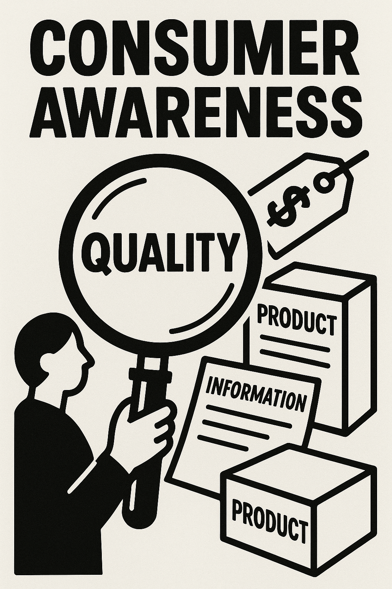
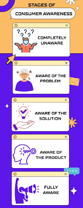
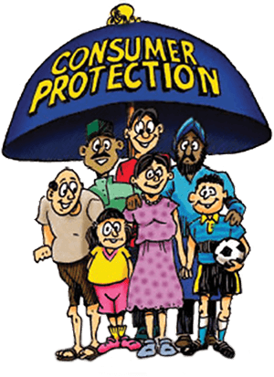
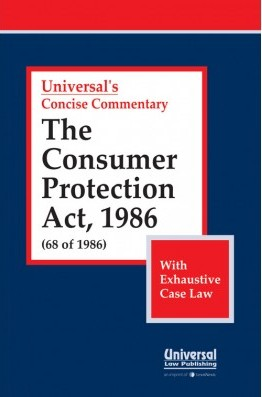
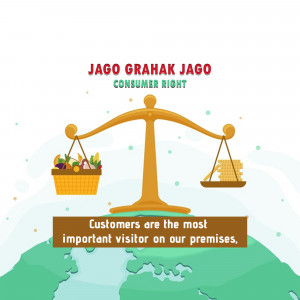
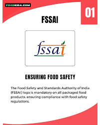
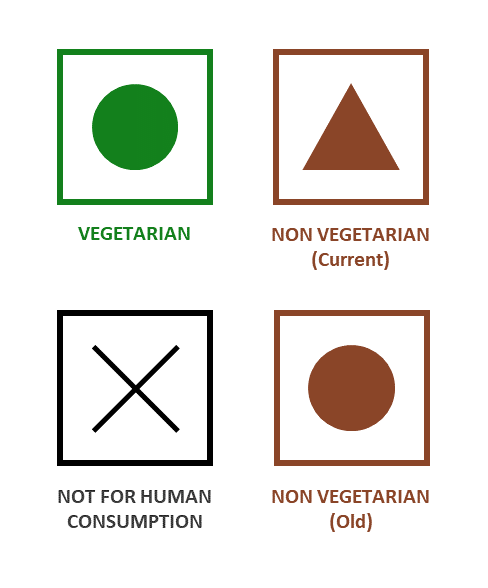

"An aware consumer is the strongest protector of their own rights."
This project is based on consumer awareness—helping us understand our rights and responsibilities as buyers. With increasing market complexities, it's important to stay informed and empowered while making purchases. This project highlights how consumers are exploited, the rights provided by law, and how we can seek redressal.
Index
Introduction
How Consumers Are Exploited in the Marketplace
Enactment of COPRA (Consumer Protection Act) 1986
Six Rights of Consumers
Redressal Process of Consumer Forums
Poster & Advertisement
Collage of Logos & Certification Marks
Experiments Showing Adulteration in Food Items
Acknowledgement
Reflection
Bibliography
Rubric / Project Evaluation

Introduction
Consumer awareness means being informed about the rights and responsibilities of buyers in the market. It empowers consumers to make better choices, avoid exploitation, and demand fair treatment. In today's dynamic and competitive market, it’s essential to understand the ways in which sellers operate and how we can protect ourselves through knowledge, legal support, and ethical practices.
This project sheds light on various aspects of consumer awareness including exploitation in the marketplace, legal protection through COPRA, consumer rights, and how to seek redressal in case of injustice. With increasing digital transactions and marketing strategies, being a smart and alert consumer is more important than ever.

How Consumers Are Exploited in the Marketplace
In the marketplace, consumers are often exploited in the following ways:
Less Weight and Measures: Consumers sometimes receive less than what they pay for. For example, a shopkeeper might give 480g instead of 500g.
Substandard Quality: Low-quality or expired products are sold without proper warnings.
High Prices: Traders may charge more than the printed MRP.
Duplicate Products: Fake or duplicate goods are sold under famous brand names.
Adulteration: Products like ghee, milk, or spices may be mixed with harmful or low-grade substances.
Lack of Information: Manufacturers may not mention proper details such as ingredients, expiry date, or directions for use.
These practices violate consumer rights and highlight the need for stronger awareness and legal protection.

Enactment of COPRA (Consumer Protection Act) 1986
The Consumer Protection Act, commonly known as COPRA, was enacted in 1986 by the Government of India to protect the interests of consumers and provide a simple and quick redressal mechanism against consumer complaints.
This Act was a major step in empowering consumers in India. It recognizes the consumer’s right to be informed, to choose, to seek redressal, and to be heard. COPRA also laid the foundation for consumer forums at three levels:
District Forum – for claims up to ₹20 lakhs (later revised in 2019).
State Commission – for claims between ₹20 lakhs and ₹1 crore.
National Commission – for claims above ₹1 crore.
COPRA ensures that consumers have the right to raise their voice and get justice against unfair trade practices, defective goods, or poor services.

Six Rights of Consumers
The Consumer Protection Act grants consumers six basic rights. Understanding these rights helps consumers make informed choices and seek justice if exploited.
Right to Safety: Protection against goods and services that are hazardous to health or life. Example: Buying ISI-marked electrical appliances.
Right to be Informed: Consumers must be provided complete details about the product — price, quality, ingredients, etc. Example: Checking MRP, expiry date on food products.
Right to Choose: Access to a variety of products at competitive prices. Example: Choosing between brands without pressure.
Right to be Heard: Consumer interests must be considered in government policies and business decisions. Example: Lodging complaints through consumer forums or helplines.
Right to Seek Redressal: Fair settlement of genuine grievances through proper compensation or replacement. Example: Getting a refund for a defective product.
Right to Consumer Education: Knowledge about consumer rights and laws through education and awareness programs. Example: “Jaago Grahak Jaago” campaign by the government.
Redressal Process of Consumer Forums
To protect consumer rights, the Consumer Protection Act provides a three-tier redressal system where consumers can file complaints if they are exploited.
Three-Tier Consumer Redressal System:
District Forum: Deals with complaints involving claims up to ₹1 crore. Located in every district.
State Commission: For claims above ₹1 crore and up to ₹10 crores. Located in each state capital.
National Commission: For claims above ₹10 crores. Located in New Delhi.
How to File a Complaint:
Prepare a written complaint stating the problem clearly.
File the complaint in the appropriate forum depending on the claim amount.
Case Study: Faulty Refrigerator – Real Case
Background: A man from Mumbai bought a refrigerator. Within 2 months, it stopped cooling. The company didn’t repair or replace it even after repeated complaints.
Action Taken: He filed a case at the District Consumer Forum with proof of purchase and complaint records.
Verdict:
The forum ordered the company to:
- Replace the refrigerator
- Pay ₹10,000 as compensation
Conclusion: This shows how consumer forums protect buyers from unfair trade practices.
Poster & Advertisement
Digital Poster: "Jaago Grahak Jaago"

The above poster spreads awareness among consumers to stay alert and make informed choices while purchasing goods or services.
Sample Advertisement
🎯 Attention Consumers!
Are you aware of your rights as a buyer?
Always ask for a bill and check for ISI, Agmark, or Hallmark symbols.
Don’t fall for misleading ads or fake offers!
If you face any problem, contact your nearest consumer forum.
Jaago Grahak Jaago! – An initiative for empowered and alert consumers.

Collage of Logos & Certification Marks
ISI Mark
Ensures quality and safety of products manufactured in India.
Agmark
Certifies the quality of agricultural products in India.
Hallmark
Guarantees purity of gold and silver jewellery.
FSSAI
Food Safety and Standards Authority of India ensures food safety standards.
Logos and certification marks are symbols that assure consumers about the quality and authenticity of products. These marks are issued by government or recognized bodies to help buyers make informed choices. For example, the ISI mark is used for industrial products like electrical appliances, ensuring safety standards. The Agmark certifies the quality of agricultural products like pulses and grains. The Hallmark is used for the purity of gold and silver jewelry. Displaying a collage of such logos in consumer awareness projects helps people recognize trustworthy products and avoid fake or substandard goods.

Experiments Showing Adulteration in Food Items
Adulteration means mixing unwanted substances in food items, which is harmful to health. Here are some simple experiments to detect adulteration:
1. Test for Chalk Powder in Flour
Take a pinch of flour and add a few drops of dilute hydrochloric acid (HCl). If it fizzes and produces bubbles, it indicates presence of chalk powder (calcium carbonate).
2. Test for Starch in Atta (Wheat Flour)
Add a few drops of iodine solution to the flour. If the color changes to blue-black, starch is present.
3. Test for Washing Powder in Sugar
Dissolve sugar in water and shake well. If it produces foam, it indicates presence of washing powder.
4. Test for Oil Adulteration in Mustard Oil
Mix a few drops of oil with water. Pure mustard oil does not mix with water, but if adulterated, it may mix.
5. Test for Chalk Powder in Milk
Boil milk in a clean vessel. If white residue remains after boiling, it may indicate adulteration with chalk powder.
Note: These are basic home experiments. For accurate testing, laboratory analysis is recommended.
Reflection
1. What did you learn about consumer rights and responsibilities?
I learned that as consumers, we have rights like safety, information, choice, and redressal. But we also have the responsibility to be aware and make informed decisions.
2. How has this project changed the way you think about being a consumer?
It made me realize the importance of checking certification marks and raising my voice if treated unfairly in the market.
3. Have you ever seen or experienced a case of consumer exploitation? Describe briefly.
Yes, I once saw a shopkeeper selling expired snacks. When we pointed it out, he quietly removed them from the shelf.
4. How will you apply this knowledge in your daily life?
I will always check product labels, expiry dates, and marks like ISI or Agmark before buying anything.
5. Which part of the project did you enjoy the most and why?
I enjoyed making the website using HTML on sublime text software.
Acknowledgement
I would like to express my sincere gratitude to my teacher, Mrs. Kavita Mankhand, for guiding me throughout this project and providing valuable support.
Special thanks to my school, Delhi Public School Varanasi, for providing the necessary resources and encouragement.
This project has helped me understand the importance of consumer awareness and responsibilities.
Bibliography
Books:
NCERT Economics Textbook for Class 10 (2025-26 Session)
Consumer Protection Act, 1986 - Official Government Publications